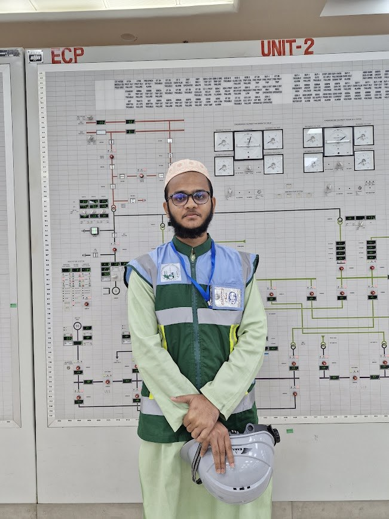

Ridoy Khan
Mechanical Engineering undergraduate researcher at Khulna University of Engineering & Technology (KUET), Bangladesh. My interests span computational materials science, high-entropy alloys, hybrid composites, and advanced engineering simulation.
Download CVExplore Research
About Me
I am an undergraduate researcher in Mechanical Engineering at KUET, working across experimental composite materials and computational materials science. I am interested in understanding structure–property relationships through experimental characterization, atomistic simulation, and numerical analysis, and I aim to pursue doctoral research in the United States.
Khulna University of Engineering & Technology
B.Sc. in Mechanical Engineering · Expected Apr 2027
CGPA: 3.62/4.00 · Class rank: 15th of 139
Research Experience
Mechanical Property Analysis of Hybrid Composite Materials
Supervisor: Professor Dr. Md. Ashraful Islam
- Fabricated hybrid fiber-reinforced composite laminates using the hand lay-up technique.
- Performed ASTM-standard tensile, flexural, impact, hardness, and water absorption tests.
- Conducted characterization using SEM, FESEM, XRD, FTIR, and TGA.
- Contributed to peer-reviewed journal publications on advanced composite materials.
Atomistic Investigation of the Mechanical Behavior of High-Entropy Alloys Using Molecular Dynamics Simulations
Supervisor: Professor Dr. Md. Ashraful Islam
- Developing atomistic models of high-entropy alloys using molecular dynamics simulations.
- Investigating tensile behavior under different temperatures and strain rates.
- Analyzing deformation mechanisms using CNA, RDF, and DXA.
Publications
Publication details reproduced from the supplied CV. Verified DOI and publisher links can be added later.
01. Development of Alumina (Al₂O₃) Filler-Loaded Cotton/Glass Fiber-Reinforced Hybrid Composite
Comparative Study of Mechanical and Water Absorption Performance for Sustainable Structural Applications.
02. Biogenic Synthesis of Fe-Doped ZnO Nanoplates for Rapid Photodegradation of Chloramphenicol
Crystallographic, Optical, and Magnetic Insights from Experimental and Computational Studies.
03. Influence of Stacking Sequence on the Multifunctional Performance of Carbon/Kevlar/Stainless-Steel Wire Mesh Hybrid Laminates
Selected Projects
Design and Analysis of a Gear-Driven Ship Propulsion System
Designed a gear-driven ship propulsion assembly comprising a shaft, spur gears, ball bearings, and propeller using SolidWorks.
SolidWorksMechanical DesignMechanical Characterization of SiO₂–CeO₂ Reinforced Carbon–Basalt–Glass Hybrid Composites
Fabricated hybrid composite laminates and evaluated their tensile, flexural, impact, and morphological properties.
CompositesMaterials TestingTechnical Skills
Programming
Python · C · C++
Simulation
LAMMPS · ABAQUS · ANSYS Fluent
CAD & Design
SolidWorks · AutoCAD
Characterization
SEM · FESEM · TEM · XRD · FTIR · TGA
Mechanical Testing
UTM · Universal Hardness Tester · Thermal Conductivity Tester · Izod Impact Tester
Laboratory & Software
Optical Microscope · CNC Lathe · CNC Milling · Desktop 3D Printer · OriginPro · Microsoft Office · LaTeX
Experience and Activities
Industrial Attachment Trainee
Completed 15 days of industrial training, gaining practical exposure to power plant operations, equipment, and maintenance practices.
Senior Executive, Mechanical Powertrain
Add specific powertrain responsibilities and competition season details to strengthen this profile.
Member
Former Debater
Volunteer
Honors & Awards
Technical Board Scholarship
KUET · Three consecutive academic years
Government Scholarship for Academic Excellence
2017, 2019
Champion
Poster Presentation Competition · National Chemical Fest
First Runner-up
Three-Minute Thesis (3MT) · National Mechanical Fest
The IMechE Speak Out for Engineering (SOfE) 2026 Top 8 selection can be added after confirming the official result wording and category.
Contact
For research collaboration, academic inquiries, or doctoral opportunities, please get in touch.
Email: khan2105077@stud.kuet.ac.bd
Location: Khulna, Bangladesh